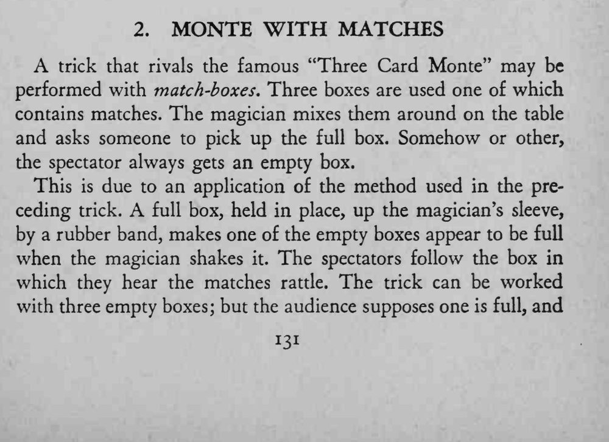
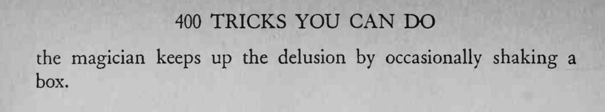

三个火柴盒在桌上倒来倒去，只有一个装着火柴，可无论观众怎么挑，拿到的总是空盒。
摇盒子的时机要跟观众的目光配合，声音才能误导他们。


A trick that rivals the famous "Three Card Monte" may be performed with match-boxes. Three boxes are used one of which contains matches. The magician mixes them around on the table and asks someone to pick up the full box. Somehow or other, the spectator always gets an empty box. This is due to an application of the method used in the preceding trick. A full box, held in place, up the magician's sleeve, by a rubber band, makes one of the empty boxes appear to be full when the magician shakes it. The spectators follow the box in which they hear the matches rattle. The trick can be worked with three empty boxes; but the audience supposes one is full, and the magician keeps up the delusion by occasionally shaking a box.